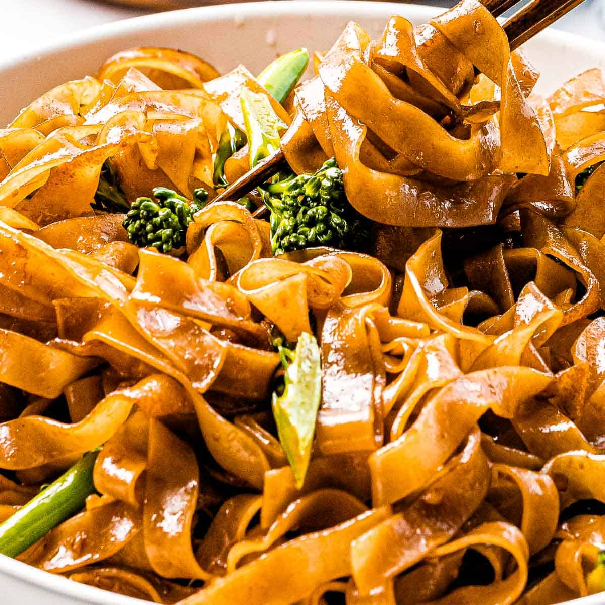

Pad See Ew

Description
Pad See Ew – the popular Thai stir fried noodles straight from the streets of Thailand made at home! While Pad Thai is sweeter and nuttier, Pad See Ew is salty, balanced with a touch of sour and a wonderful chargrilled flavour which you can create at home!
Pad See Ew, which means “stir fried soy sauce noodles”, is an extremely popular Thai street food meal.
Ingredients
- 200g dried wide rice stick noodles
- 2 tsp dark soy sauce
- 1 1/2 tbsp oyster sauce
- 1 tbsp light soy sauce
- 2 tsp white vinegar
- 2 tsp sugar
- 3 tbsp peanut or vegetable oil
- 2 cloves garlic, finely chopped
- 150g chicken thighs
- 1 large egg
- 4 stems chinese broccoli
Steps
Preparation
-
Chinese Broccoli: Trim ends, cut into 3" pieces. Separate leaves from
stems. Cut thick stems in half vertically so they're no wider than .3" thick.
-
Noodles: Prepare according to packet directions and drain. Time this Step
so they are cooked just before using.
-
Sauce: Mix sauce ingredients until sugar dissolves.
Cooking
-
Heat oil: Heat 1 tbsp oil in very large heavy based skillet or wok
over high heat.
-
Cook garlic and chicken: Add garlic, cook 15 seconds. Add chicken, cook
until chicken is mostly white.
-
Chinese broccoli stems: Add stems, cook until chicken is almost cooked
through.
-
Chinese broccoli leaves: Add Chinese broccoli leaves, cook until just wilted.
-
Scramble egg: Push everything to one side, crack egg in and scramble
-
Remove chicken from wok: Remove everythin in the wok onto a plate.
Scrape wok clean.
-
Caramelise noodles: Return wok to stove, heat 2 tbsp oil over high heat
until it starts smoking. Add noodles and sauce. Toss as few times as possible
to disperse sauce and make edges of noodles caramelise -- about 1 to 1 1/2 minutes.
-
Add chicken back in: Quickly add chicken and vegetables back. Toss to disperse.
Serve immediately!